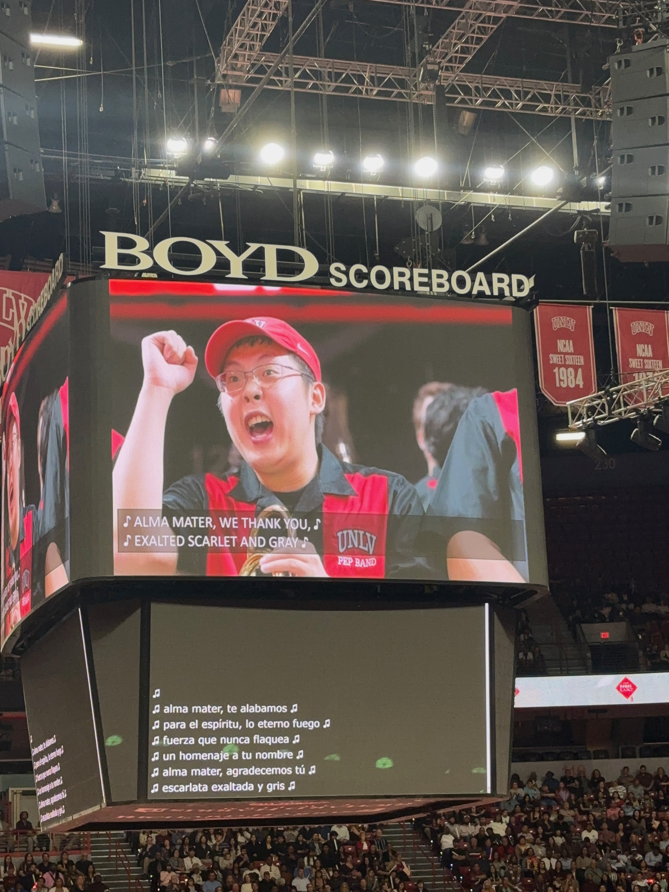
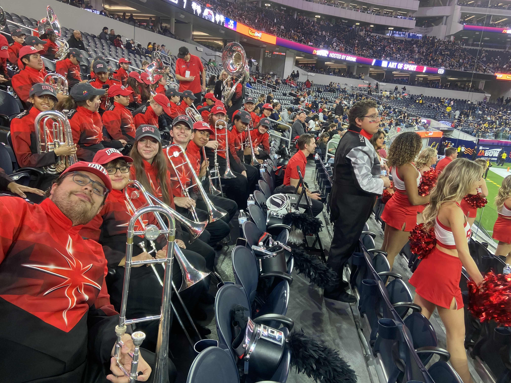
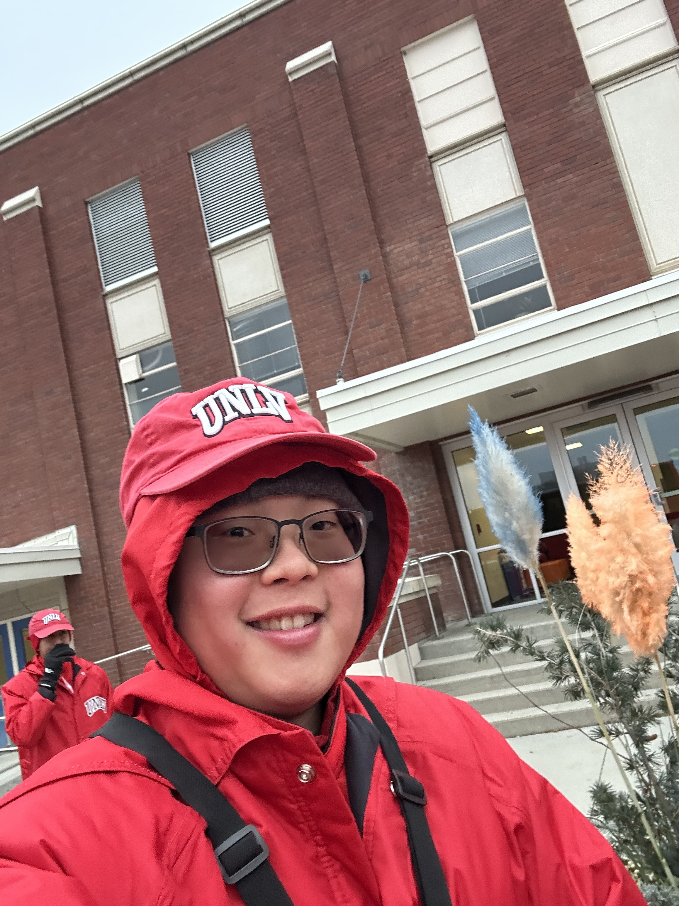
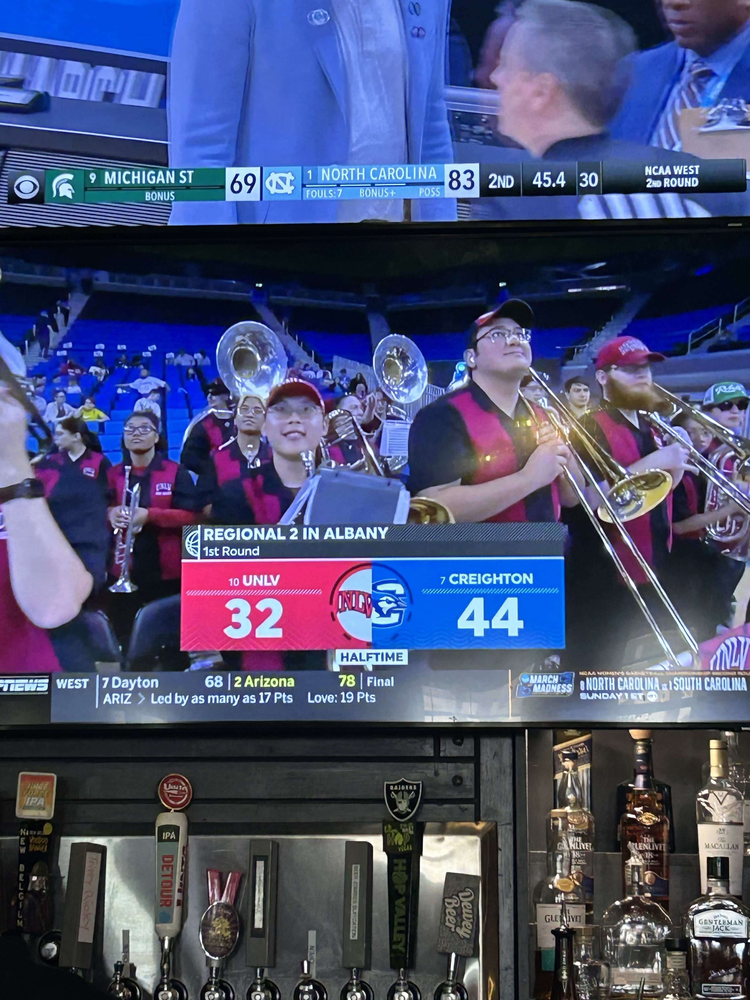
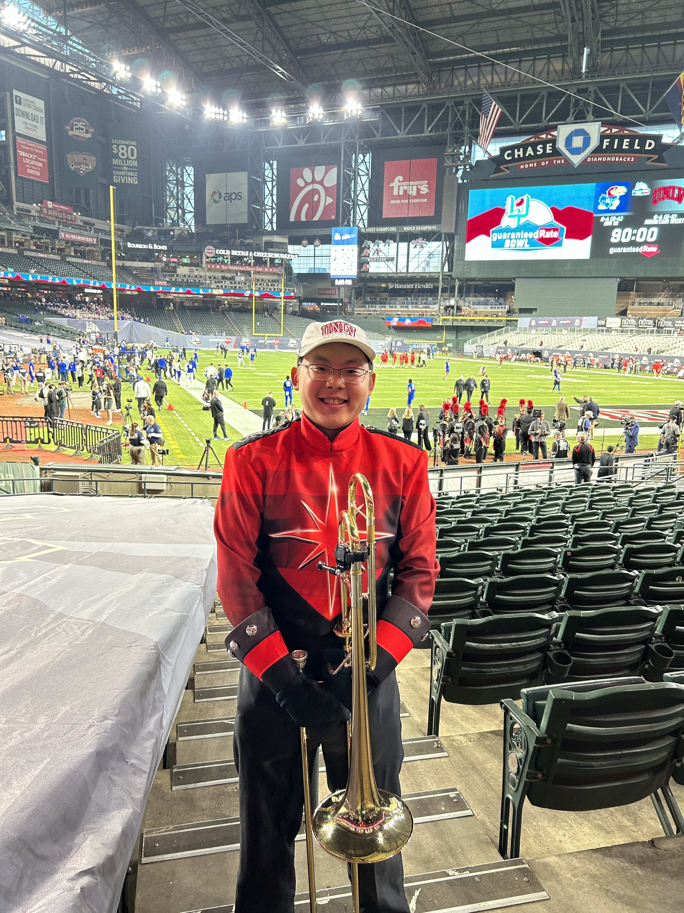
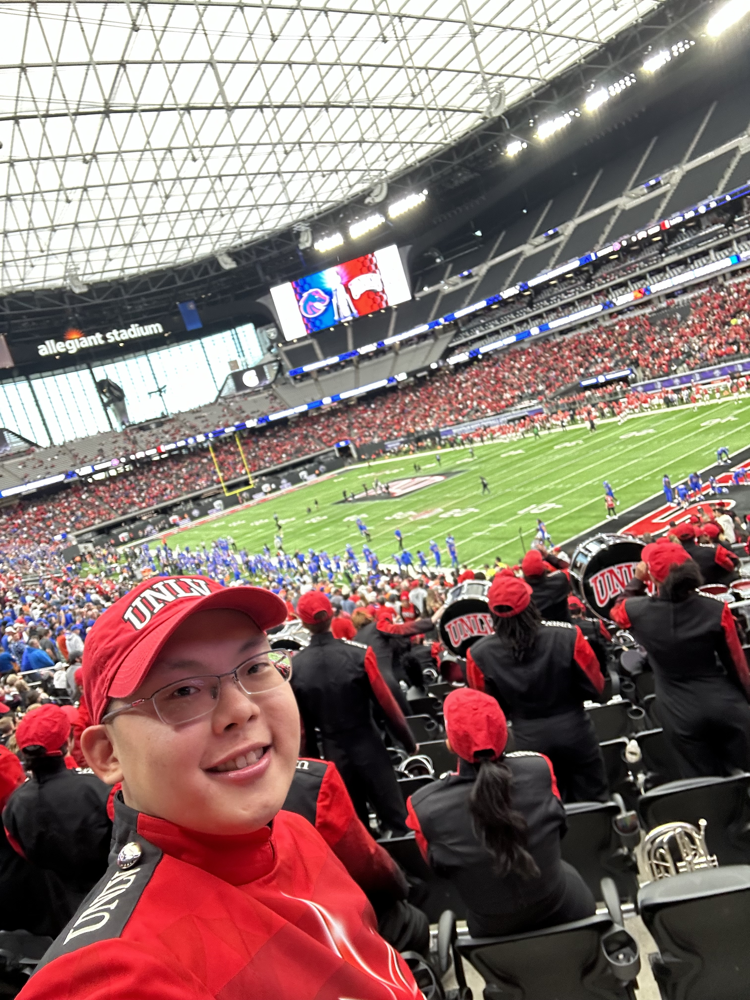
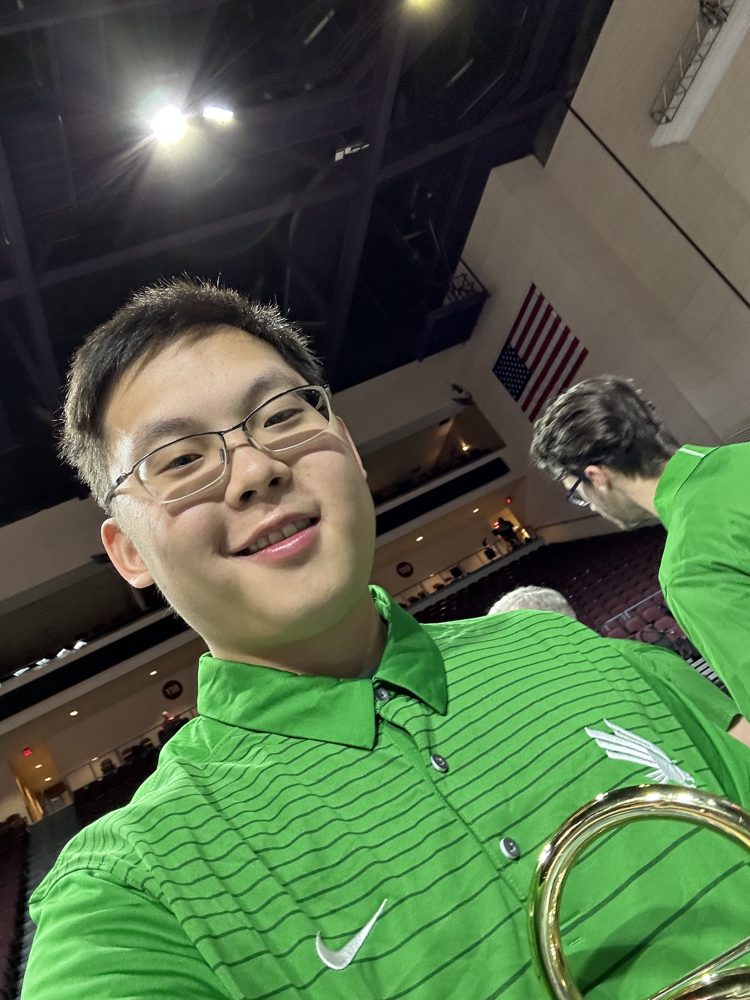

UNLV Marching Band
My experiences playing trombone with the UNLV Marching Band and Pep Band, from rehearsals on campus to performances and trips with the Star of Nevada Marching Band.
Experience
I joined in 2022 and am now in my fifth year with the bands. I also served as trombone section leader from August 2024 through May 2026.
Band has been a big part of my college experience, giving me opportunities to travel, perform, grow, and support UNLV alongside other musicians.
Section Leadership
As section leader, I coordinated 19 trombonists, including 9 freshmen. I led sectionals, tracked attendance, checked uniforms, and communicated expectations for rehearsals and performances.
Being a section leader taught me a lot, often on the fly. I learned how much preparation happens behind the scenes and how that preparation helps when plans change. I also became more comfortable knowing when to step up, make decisions quickly, and communicate them with confidence. I was definitely lacking as a section leader due to my inexperience. I was often too passive as a section leader and hesitant to make decisions. Looking back, I can see times when I needed to step up more. I truly learned a lot from the experience and grew as a person and leader.
Performances & Travel
- UNLV football and basketball games
- Performed as the UNT pep band for the NIT
- Played with the Black Hole Band for the Raiders' Black Hole fan club
- Performed at 15+ corporate, community, and special events, including LIV Golf, TwitchCon, and a Google event
- NCAA basketball tournament trips to LSU and UCLA
- Guaranteed Rate Bowl, LA Bowl, and Frisco Bowl performances
- Away game trips to San Diego, San Jose, Boise, and Hawaii
Favorite Performances
A few band trip videos :)
Photos







